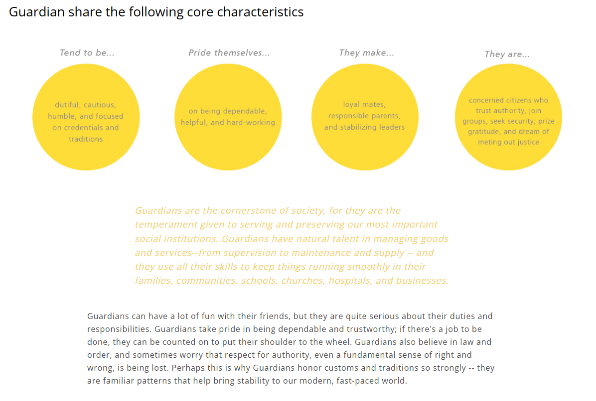

Being a creative and approachable person has significantly shaped my academic journey. My creativity helps me think outside the box when solving problems in Computer Science, allowing me to find innovative solutions to coding challenges. It also makes writing and presentations more engaging, as I enjoy adding unique elements to my work. My approachable nature allows me to collaborate easily with classmates, making group projects more productive and enjoyable.
Additionally, my passion for playing the drums has taught me discipline and patience, qualities that translate well into my studies. Practicing rhythm and timing requires focus, much like debugging code or working through complex algorithms. My love for anime and manga has also influenced my academic life by sparking my imagination and teaching me about different perspectives, cultures, and philosophical ideas that I sometimes apply in my studies.
One character I deeply admire is Madara Uchiha from Naruto. His outlook on life, though intense, reflects deep truths about the world. One of my favorite quotes from him is:
"In this world, whenever there is light, there are also shadows. As long as the concept of winners exists, there must also be losers."
This quote reminds me that balance is necessary in all aspects of life, including academics. There will always be struggles and setbacks, but they are necessary for growth. I chose Madara because of his intelligence, strategic mindset, and his ability to challenge conventional thinking. Even though he is portrayed as a villain, his philosophies make me reflect on the complexities of human nature and society.

I took the Keirsey Temperament Sorter personality test and received the results of Guardian. The test categorized me as a person who believes in following the rules and cooperating with others., which I found to be accurate based on my experiences.
In general, I think personality tests can provide insight into our strengths and weaknesses, but they shouldn’t be taken as absolute truths. In my case, I agree with some aspects of the results, such as being loyal, trustworthy, dependable and cautious. Overall, while the test offers useful self-reflection, I believe real-life actions define a person more than a personality label.